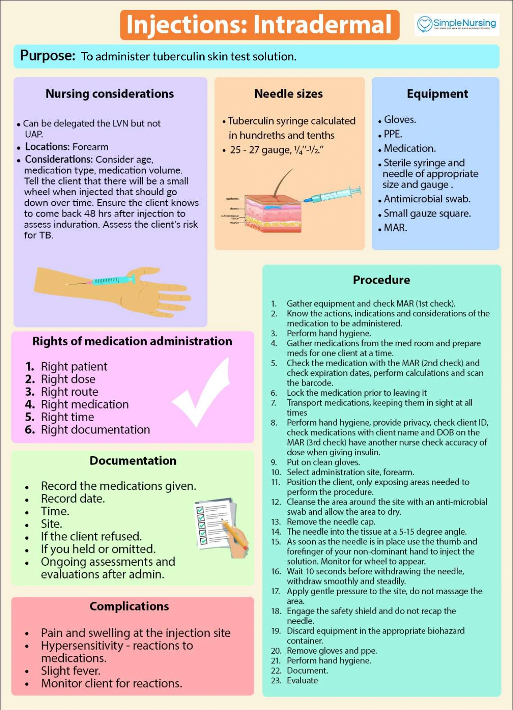
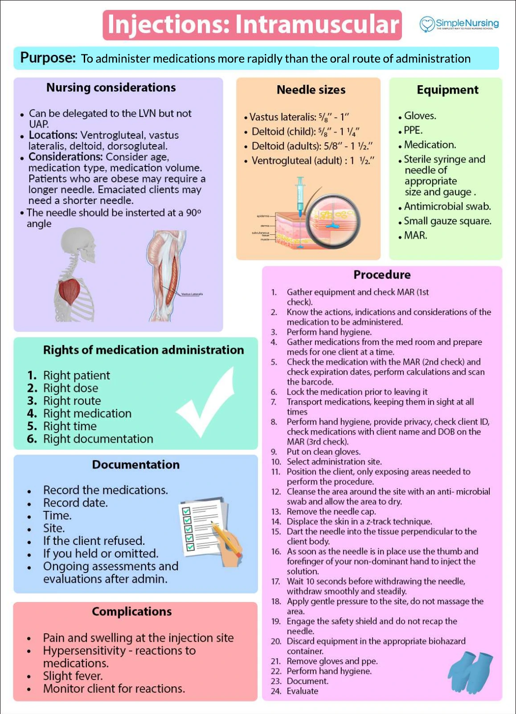
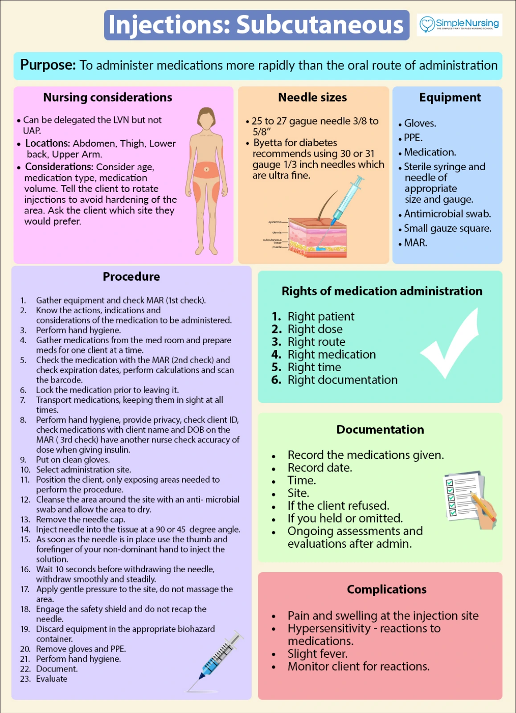

Perfect Drug Card 🗂️
& Safe Medication Administration
Drug cards feel like an overwhelming wall of facts. They aren't — every drug you'll ever study fits into the same 5-field template. Learn the template once, then plug in any drug for the rest of the program. This is the study method every other drug page assumes you already know.
📄 Simple Nursing original — opens in Drive →
Read the full PDF here
THE TEMPLATE
STEP 1 · THE FAB 5Every drug card, no matter the class, answers the same 5 questions in the same order.
🧾 The Fab 5 — filled in for a real drug (Lisinopril)

A familiar suffix suggests a drug family but does not replace checking the actual medicine.
Read the picture
Verify the order
Patient, drug, indication, dose, route and timing.
Check suitability
Allergies, assessment, labs, contraindications and interactions.
Evaluate response
Document administration and reassess effects.
Drug knowledge
Know the purpose, mechanism, major adverse effects and required monitoring.
Calculation
Use correct units and an independent check when required; confirm unusual doses.
Teach back
Ask the patient to explain purpose, schedule and important symptoms to report.
①② Name & Class — the ID tags
- Every drug has 1 generic name but can have multiple brand/trade names
- EXAM TIP NCLEX tests generic names only, never brand names
- Class = the drug family — often told by its suffix (see the Drug Suffixes reference page)
| Generic | Brand |
|---|---|
| Warfarin | Coumadin |
| Ibuprofen | Advil, Motrin |
| Acetaminophen | Tylenol |
③ Mechanism → Indication — the "why it works"
Mechanism of action = how the drug works at the cellular/chemical level. Indication = what it's used for — the two are always connected by a chain of logic.
- Penicillin breaks down the bacterial cell wall → kills bacteria → treats infection
- Heparin/Warfarin block clotting factors → prevents clots → treats DVT/PE/AFib
- Labetalol blocks alpha & beta receptors → vessels relax, heart slows → treats hypertension
④⑤ Side Effects & Contraindications — the "watch for"
Side effects = expected, usually tolerable. Contraindications = reasons to never give this drug to this client.
- Antibiotics for ear/GI/skin infections often cause nausea & vomiting (side effect)
- Acetaminophen + liver disease = contraindication (hepatotoxicity risk)
KNOW THE WORDS
STEP 2 · EFFECT VOCABULARYThese 4 words get mixed up constantly on exams — the difference is severity and predictability.
📊 Therapeutic → Side → Adverse → Toxic: one severity ladder
🔗 Synergistic vs. ❌ Antagonistic vs. ➕ Additive interactions
| Interaction | What happens |
|---|---|
| Additive | Combined effect = same as the sum of each drug alone |
| Synergistic | Combined effect is greater than expected — e.g. opioids + alcohol → dangerous CNS depression |
| Antagonistic | One drug blocks another — e.g. naloxone reverses opioids |
🤰 Pregnancy categories — safest to most dangerous
safest
never
A = well-controlled studies show no risk. X = studies show proven fetal harm — never given in pregnancy.
🚫 Contraindication vs. ⚠️ Caution — know which one stops you cold
Contraindication = a reason never to give the drug to this client at all — e.g. acetaminophen in severe liver disease, pain medication + active alcohol use, caffeine-containing stimulants + Adderall.
These aren't side effects to monitor — they're reasons to hold the drug and call the prescriber before it's ever given.
SAFE ADMIN
STEP 3 · APPLY THE TEMPLATE SAFELYKnowing the card means nothing if the med doesn't reach the right client safely — this is where the 5 Rights page picks up.
✅ From card to bedside — the full loop
🧪 Toxic effect — a Fab-5 red flag to watch
Accumulation happens fastest when the client can't eliminate the drug — think renal failure, hepatic impairment, or the elderly with reduced clearance.
🎓 Client education is part of the card
A complete drug card always ends with: what should the client watch for and report? That single question turns memorized facts into real teaching.
Intradermal Injections · Simple Nursing
Original handout from your October 30 downloads.
TB skin-test timing: return for a trained clinician to read the induration at 48–72 hours, rather than only at 48 hours. CDC skin-test guidance.
View the intradermal injections infographic

Intramuscular Injections · Simple Nursing
Original handout from your October 30 downloads.
Choose the site and needle for the medication and patient. The sheet’s listed lengths and gluteal sites are not universal vaccine instructions. For vaccines, follow the age, body-size, route and site guidance from CDC.
View the intramuscular injections infographic

Subcutaneous Injections · Simple Nursing
Original handout from your October 30 downloads.
View the subcutaneous injections infographic
